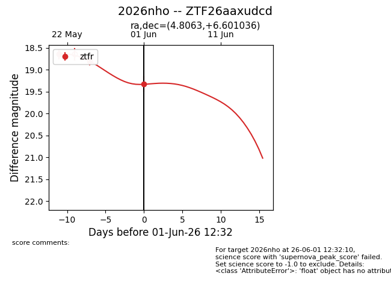
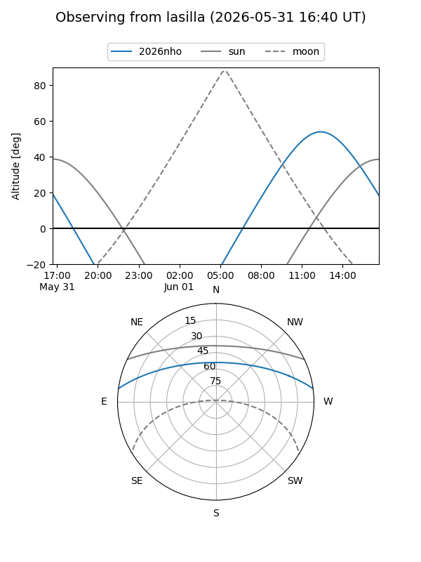
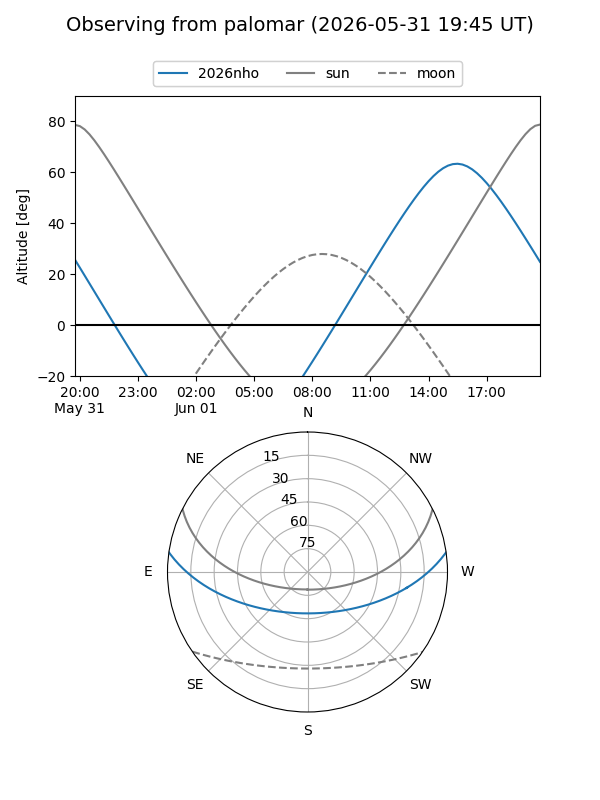
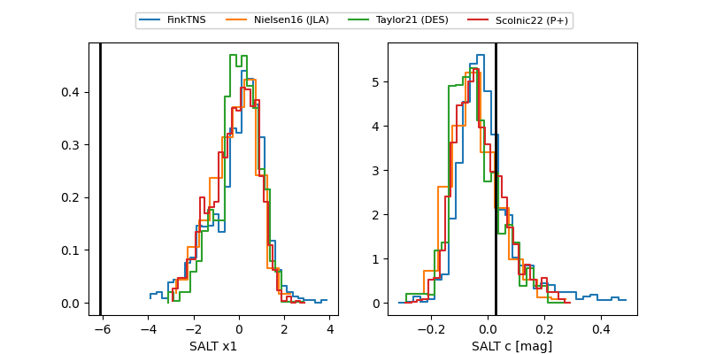

2026nho
Target 2026nho at 2026-06-01 12:33
Aliases and brokers:
lsst-FINK: link
lsst-Lasair: link
lsst-ALeRCE: link
ztf-FINK: link
ztf-Lasair: link
ztf-ALeRCE: link
TNS: link
YSE: link
alt names
ZTF26aaxudcd (ztf,fink_ztf)
2026nho (tns,yse)
Coordinates:
equatorial (ra, dec) = 4.8063,+6.60104
equatorial (HMS+DMS) = 00:19:13.52,+06:36:03.73
galactic (l, b) = (108.7526,-55.38140)
Flags:
TNS confirmed: nan
Photometry:
last ztfr=19.33
4 ztfr detections
Lightcurve

Visibility


Additional plots
